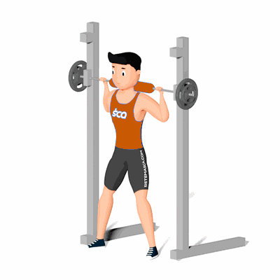

Agachamento Sumô na Barra Guiada

Nesse exercício os principais músculos trabalhados são o quadríceps e glúteos e com uma participação menor dos isquiotibiais. Com os pés abduzidos e mais distantes em relação à linha do quadril, há um trabalho maior dos adutores da coxa durante o exercício.
Ficha Técnica
Tipo: Musculação
Grupo Muscular: Glúteo
Aparelho: Nenhum
Músculos: Nenhum
Como realizar
- Apoiar a barra guiada na altura do trapézio;
- Posicionar os pés mais abertos em relação à linha do quadril, de maneira que estes estejam ligeiramente abduzidos;
- Iniciar o movimento flexionando os joelhos até o ângulo de 90 graus, mantendo sempre os joelhos alinhados com os pés;
- Estender os joelhos até estar de pé novamente;
- Repetir o movimento pelo número de repetições estipulada.
 RC STORE
RC STORE